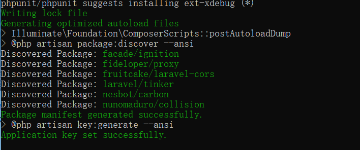
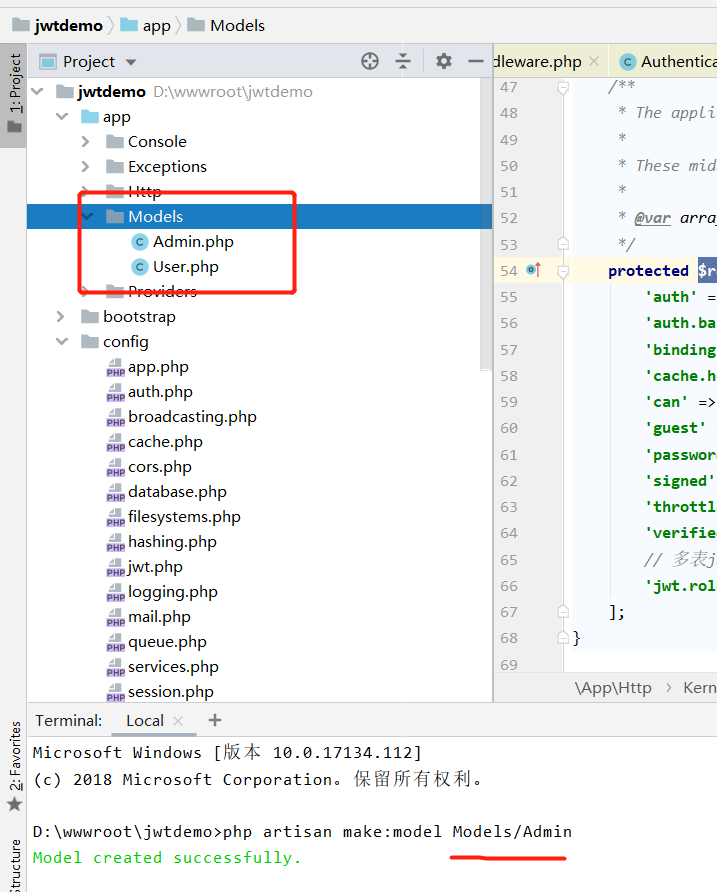

首先我们使用composer命令拉取最新的laravel7项目，确保自己的环境是php >= 7.2.5 1 composer create-project --prefer-dist laravel/laravel jwtdemo
当出现Successfully就代表完成了
执行composer install 初始化laravel项目，配置.env文件，初始化数据库配置，linux系统需要注意权限问题 拉取 jwt
1 composer require tymon/jwt-auth
Publish the config
1 php artisan vendor:publish --provider="Tymon\JWTAuth\Providers\LaravelServiceProvider"
Generate secret key
创建表，模型，我这里将User模型移到了App\Models下 1 2 3 4 5 6 7 8 9 10 11 12 13 14 15 16 17 18 19 20 21 22 23 sql： CREATE TABLE `users` ( `id` int(10 ) unsigned NOT NULL AUTO_INCREMENT, `username` varchar(255 ) NOT NULL , `password` varchar(255 ) NOT NULL , `mobile` varchar(255 ) DEFAULT '' , `created_at` timestamp NOT NULL , `updated_at` timestamp NOT NULL ON UPDATE CURRENT_TIMESTAMP, `deleted_at` timestamp NULL DEFAULT NULL , PRIMARY KEY (`id`) ) ENGINE=InnoDB AUTO_INCREMENT=5 DEFAULT CHARSET=utf8mb4; CREATE TABLE `admins` ( `id` int(10 ) unsigned NOT NULL AUTO_INCREMENT, `username` varchar(255 ) NOT NULL , `password` varchar(255 ) NOT NULL , `mobile` varchar(255 ) DEFAULT '' , `created_at` timestamp NOT NULL , `updated_at` timestamp NOT NULL ON UPDATE CURRENT_TIMESTAMP, `deleted_at` timestamp NULL DEFAULT NULL , PRIMARY KEY (`id`) ) ENGINE=InnoDB AUTO_INCREMENT=5 DEFAULT CHARSET=utf8mb4;

User/Admin 实现jwt接口 1 2 3 4 5 6 7 8 9 10 11 12 13 14 15 16 17 18 19 20 21 22 23 24 25 26 27 28 29 30 31 32 33 <?php namespace App \Models ;use Illuminate \Foundation \Auth \User as Authenticatable ;use Tymon \JWTAuth \Contracts \JWTSubject ;class Admin extends Authenticatable implements JWTSubject protected $fillable = [ 'username' , 'mobile' , 'password' , ]; public function getJWTIdentifier () { return $this ->getKey(); } public function getJWTCustomClaims () { return ['role' => 'admin' ]; } }
添加中间件 1 2 3 4 5 6 7 8 9 10 11 12 13 14 15 16 17 18 19 20 21 22 23 24 25 26 27 28 29 30 31 32 33 34 35 36 37 38 39 40 41 <?php namespace App \Http \Middleware ;use Closure ;use Symfony \Component \HttpKernel \Exception \UnauthorizedHttpException ;use Tymon \JWTAuth \Exceptions \JWTException ;use Tymon \JWTAuth \Http \Middleware \BaseMiddleware ;class JWTRoleAuth extends BaseMiddleware public function handle ($request, Closure $next, $role = null) { try { $token_role = $this ->auth->parseToken()->getClaim('role' ); } catch (JWTException $e) { return response(['code' =>400 ,'msg' =>'缺少token' ]); } if ($token_role != $role) { return response(['code' =>401 ,'msg' =>'User role error' ]); } return $next($request); } }
App\Http\Kernel 追加 1 2 'jwt.role' => \App\Http\Middleware\JWTRoleAuth::class,
Admin 验证控制器，其他的也类似 1 2 3 4 5 6 7 8 9 10 11 12 13 14 15 16 17 18 19 20 21 22 23 24 25 26 27 28 29 30 31 32 33 34 35 36 37 38 39 40 41 42 43 44 45 46 47 48 49 50 51 52 53 54 55 56 57 58 59 60 61 62 63 64 65 66 67 68 69 70 71 72 73 74 75 76 77 78 79 80 81 82 83 84 85 86 87 88 89 90 91 <?php namespace App \Http \Controllers \Admin ;use App \Http \Controllers \Controller ;use App \Logic \AuthLogic ;use App \Models \Admin ;use Illuminate \Http \Request ;use Illuminate \Support \Facades \Hash ;use Tymon \JWTAuth \Facades \JWTAuth ;class AuthController extends Controller public function login (Request $request) { $credentials = request(['username' , 'password' ]); if (! $token = auth('admin' )->attempt($credentials)) { return response()->json(['code' =>401 ,'msg' => 'Unauthorized' ], 401 ); } return $this ->respondWithToken($token); } public function register (Request $request) { $username = $request->username; $password = $request->password; $user = Admin::create(['username' => $username, 'password' => Hash::make($password)]); return response([ 'code' => 200 , 'msg' => 'ok' , 'data' => [ 'access_token' => JWTAuth::fromUser($user), 'token_type' => 'bearer' , ] ]); } public function me (Request $request) { $id = $request->user()->id; $username = $request->user()->username; $user = $request->user(); dd($username); dd(auth('admin' )->payload()->get()); } public function refresh () { return $this ->respondWithToken(auth()->refresh()); } protected function respondWithToken ($token) { return response()->json([ 'code' => 200 , 'msg' => 'ok' , 'data' => [ 'access_token' => $token, 'token_type' => 'bearer' , ] ]); } }
Admin + User api路由 jwt.role仅仅只验证token颁发的渠道，auth 这个中间件大家可以自行整合，比如修改验证失败的json响应体。使用auth验证 $request->user()可以拿到用户模型
jwt.auth不推荐大家使用 ，因为无法区分出来是要验证哪个表的用户
1 2 3 4 5 6 7 8 9 10 11 12 13 14 15 16 17 18 19 20 Route::namespace('Admin' )->prefix('admin' )->group(function ($admin) Route::post('login' , 'AuthController@login' ); Route::post('register' , 'AuthController@register' ); $admin->group([ 'middleware' => ['jwt.role:admin' ,'auth:admin' ], ], function ($router) $router->get('me' , 'AuthController@me' ); }); }); Route::namespace('User' )->prefix('user' )->group(function ($admin) Route::post('login' , 'AuthController@login' ); Route::post('register' , 'AuthController@register' ); $admin->group([ 'middleware' => ['jwt.role:user' ,'auth:user' ], ], function ($router) $router->get('me' , 'AuthController@me' ); }); });
关于Api的系统响应不是你想要的结构体时，修改App\Exceptions\Handler.php
1 2 3 4 5 6 7 public function render ($request, Throwable $exception) if ($request->expectsJson()){ return response(['code' =>400 ,'msg' =>$exception->getMessage()]); } return parent ::render($request, $exception); }
贴上我的 config\auth.php,这个配置是配合 auth中间件或auth函数使用
1 2 3 4 5 6 7 8 9 10 11 12 13 14 15 16 17 18 19 20 21 22 23 24 'guards' => [ 'user' => [ 'driver' => 'jwt' , 'provider' => 'users' , 'hash' => false , ], 'admin' => [ 'driver' => 'jwt' , 'provider' => 'admins' , 'hash' => false , ], 'providers' => [ 'users' => [ 'driver' => 'eloquent' , 'model' => App\Models\User::class, ], 'admins' => [ 'driver' => 'eloquent' , 'model' => App\Models\Admin::class, ], ],